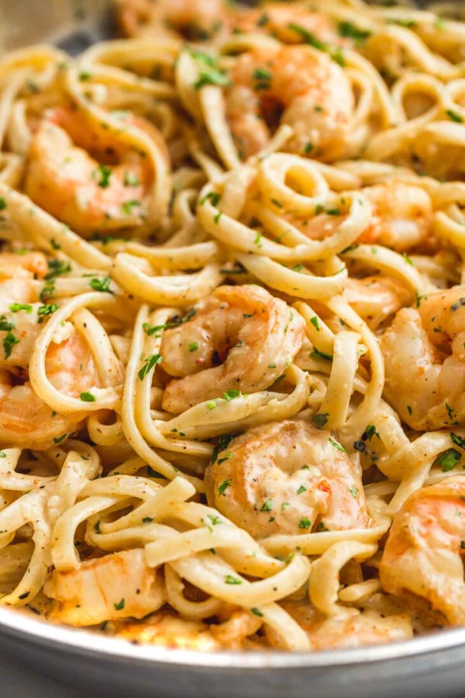

Creamy Garlic Shrimp Pasta

Description
Creamy garlic butter shrimp pasta is an elegant pasta dish with big flavors! It is so quick and easy, and perfect for a weeknight dinner as it's ready in just 15 minutes. Serve this for a Romantic date night, for a special occasion, or as a family meal. Either way, everyone will love it!
Ingredients
- 8 oz Linguine Pasta
- 1 tbsp Olive Oil
- 1 lb Raw Shrimp
- ½ tsp Salt
- ¼ tsp Black Pepper
- 1 tbsp Unsalted Butter
- 1 tbsp Old Bay Seasoning
- 1 Clove Garlic, minced
- ½ cup Heavy Whipping Cream
- ½ cup Grated Parmesan
- ¼ cup Fresh Parsley
Steps
- In a medium-sized saucepan, boil water and salt it. Add your pasta, and cook according to the package instructions until al dente. When the pasta is cooked, reserve 1 cup of the pasta water and drain the pasta.
- Salt, to taste
- 8 oz Linguine Pasta
- In a skillet over medium heat, melt the butter, and add olive oil. Cook the shrimp for a minute, then season with salt, pepper, and Old Bay Seasoning or paprika if using.
- 1 tbsp Unsalted Butter
- 1 tbsp Olive Oil
- 1 lb Shrimp
- ½ tsp Salt
- ¼ tsp Black Pepper
- 1 tbsp Old Bay Seasoning
- Continue to cook the shrimp until it's pink. Do this in batches if you're worried that you may overcook the shrimp. Remove the shrimp onto a plate and set aside.
- In the same pan, melt butter and add garlic, cook for 30 seconds or until it's fragrant. Add the heavy cream, and with the spatula deglaze the pan.
- 1 tbsp Unsalted Butter
- 1 clove Garlic, Minced
- ½ cup Heavy Whipping Cream
- Add parmesan, let it melt then loosen the sauce with reserved pasta water and allow to simmer for a minute. Taste the sauce and see if more salt and pepper is needed.
- Toss the pasta with the sauce until it's well coated. Add the shrimp back in to reheat it gently, garnish with freshly chopped parsley and serve.